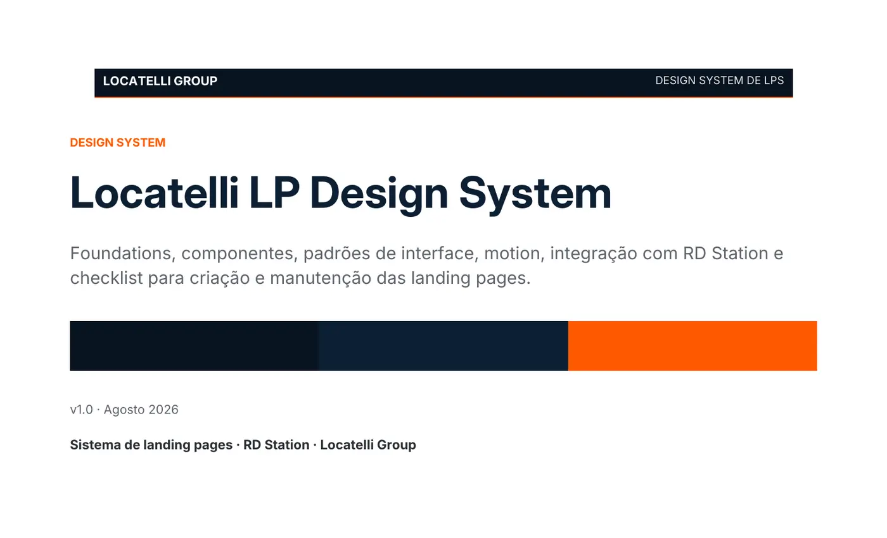

Aquisição digital / Sistema de páginas
Landing Pages Locatelli
Um ecossistema coerente entre intenção de busca, anúncio, conteúdo, interface, formulário e conversão.
01 / Contexto
O desafio
Organizar páginas de serviços, hub, evento e agradecimento como partes de um mesmo sistema, preservando identidade e dando a cada intenção uma experiência própria.
Além do visual, o trabalho exigiu coerência entre anúncios, títulos, argumentos, links internos, formulários e estados responsivos.
- Serviços BPO, gestão contábil, contas a receber, folha e auditoria.
- Experiências Hub generalista, evento, agradecimento e página setorial bilíngue.
- Aquisição SEO on-page, arquitetura de links e estruturas de Google Ads.
02 / Sistema
Consistência sem repetição
As páginas compartilham foundations de cor, tipografia, espaçamento, formulário e footer. A personalidade muda no hero, na metáfora visual e na profundidade de conteúdo adequada a cada oferta.

- Arquitetura Sequência de conteúdo orientada à decisão e ao tipo de conversão.
- Interface Componentes consistentes com hero específico para cada serviço.
- Responsividade Grids, formulários e navegação adaptados para telas estreitas.
- Acessibilidade Semântica, foco visível, redução de movimento e controles nativos.
03 / Growth
Da busca à confirmação
O sistema aproxima a promessa do anúncio, o H1, os argumentos, o CTA e o formulário. A página de agradecimento fecha a jornada sem competir por uma nova conversão.
- SEO Titles, descriptions, canonicals, headings e links internos revisados.
- Conversão CTA e formulário contextualizados para serviço, evento ou diagnóstico.
- Integração Formulários reais no ambiente oficial e cópias públicas sem captura de dados.
- Mídia Campanhas e listas de termos separadas por intenção e destino.
04 / Demonstração
Páginas selecionadas
As demonstrações preservam interface, conteúdo e comportamento visual. Formulários, tracking e identificadores de integração foram removidos da versão de portfólio.
Limite da evidência
Este case registra entregas técnicas e de experiência. Não são apresentados números de conversão, porque não há dados públicos comparáveis que sustentem uma atribuição de resultado.